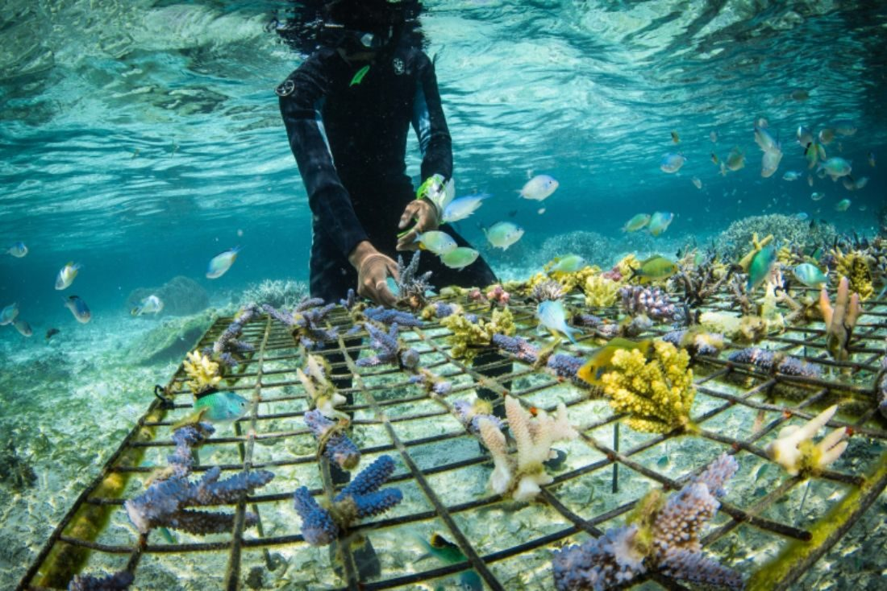
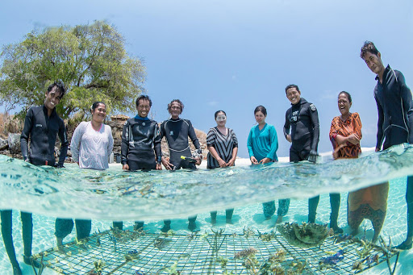
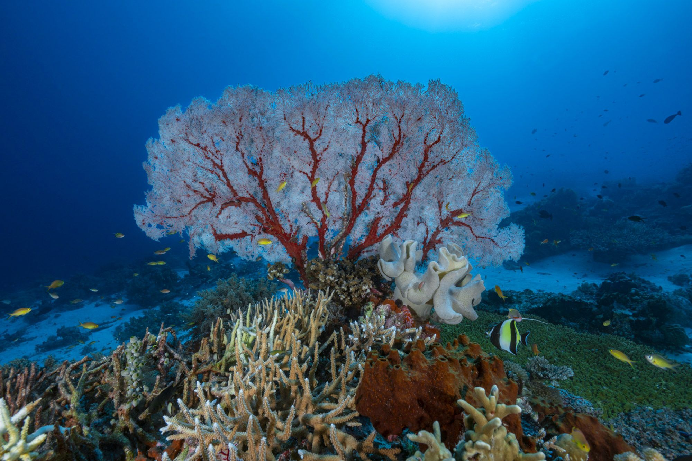

Aidez-nous à sauver le corail
Faire un don à l'association coralguardian.orgQui sommes nous ?
Les actions de notre association:
Conservation marine participative
Sauvons le corail restaure les récifs coralliens endommagés grâce à la fragmentation corallienne, un suivi scientifique régulier et la protection de la zone restaurée. La réhabilitation de récif n’est pas une fin mais un moyen. Elle permet l’implication des populations locales de pêcheurs en vertu d’une meilleure compréhension du fonctionnement de leur milieu naturel afin de mieux le protéger. Les projets ont alors un impact durable et concret sur les communautés, qui se les approprient.Sensibilisation
La restauration corallienne est aussi un outil de sensibilisation. Grâce à cet outil, Sauvons le corail sensibilise les communautés locales en promouvant une gestion durable des stocks de poissons et l’utilisation de méthodes de pêche durables au travers de la protection de l’écosystème marin local. A l’international, l’association sensibilise à l’importance des récifs coralliens notamment au travers de son programme “Adopte un corail”, de son kit de sensibilisation et de divers événements.Participation aux découvertes scientifiques
Sauvons le corail souhaite s’impliquer dans la recherche scientifique liée à la restauration des coraux et aux dangers auxquels ils font face comme le réchauffement climatique. Le partage des données biologiques et sociales de l’association pourrait aider à l’avancement de la recherche liée à la protection des récifs coralliens. L’association souhaite aussi rendre les sciences marines plus accessibles au travers d’articles scientifiques vulgarisés.


